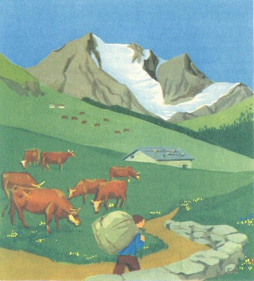

Sunday, May the 23rd, 2010
back to: title, date or indexes
Pebblehead, that titan of the potboiler, has always kept secret the precise whereabouts of his legendary “chalet o' prose”, wherein he taps out the billions of words of his bestselling paperbacks. On a recent hiking holiday, however, the noted daubist Rex Daub stumbled upon the location, and was able to execute a rapid daub in his portable hikers' daubum.

The chalet o' prose itself remains half hidden behind a verdant slope. In the foreground, we see postie struggling up the lane heaving a sack full of fan mail. You will note that he is not wearing a postie's uniform. That is because, in this mountainous region, wherever it is, all the posties are amateurs, a tradition harking back to the days of King Vud. This lame and pocky monarch took against professionalised posties in uniform from an early age, after a tantrum. It was an opinion from which he never wavered, and his first act upon his coronation was to grant crown licences for postal delivery to a gaggle of peasant amateurs. The existing uniformed posties were shipped off to a remote and barnacle-encrusted atoll.
Also in the picture we see Pebblehead's famous “seven cows”, munching grass on the verdant slope. The paperbackist has written movingly of these cows, or of six of them at least, and rather more dispassionately about the seventh, in a series of cow-related potboilers. Clockwise in the picture, starting from the largest cow, we see Spinach, Toffee Apple, Miliband, Chlorophyll, Banana Brain, Graticule and Gaston Le Mesmer, all of them familiar to readers of the series, but not, until now, visually, caught brilliantly as they are by Rex Daub's daubing.
Beyond the chalet o' prose, the roof of which we see, blue, blue, there is some other stuff in the background, but Rex Daub may have invented this just to finish off his daub. It is a tendency he has, when in a hurry, as he often is, whether or not on a hiking holiday. For further particulars see A Pedestrian Memoir Of Hiking Holidays Accompanied By Noted Daubist Rex Daub by Dobson (out of print).
Hooting Yard on the Air, June the 17th, 2010 : “The Alignment Of Tree Clumps In The East Kent Area” (starts around 16:08)